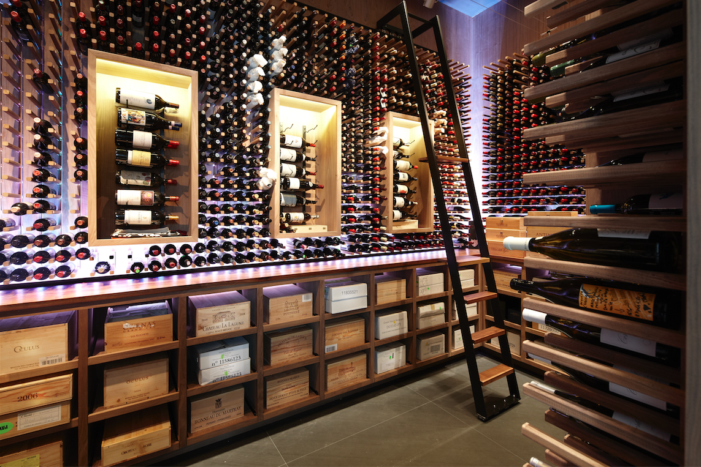

Je m’appelle Eric DUPERCHE et j’ai décidé de me lancer dans un projet fou, créer ma cave de rêve !
Et j’ai décidé de partager ici toutes les étapes par lesquelles je passe afin de vous en faire partager l’expérience. Bien sûr, la construction de cette cave ne sera que la première étape, ensuite il faudra choisir tous les vins que nous allons mettre à l’intérieur. Pour ma part, étant lyonnais, j’ai un gros penchant pour les Côtes du Rhône, que ce soit les Cote-Rotie dont j’ai de très bonnes bouteilles, les Saint-Joseph ou bien encore les Condrieu qui sont aussi très bien. Si vous me lisez, c’est que comme la plupart des vrais passionnés de vin, vous aimeriez vous constituer enfin votre propre cave et je ne peux que vous en féliciter ! Mais vous vous posez beaucoup de questions et c’est bien normal.
- Cela vous paraît globalement un projet trop complexe ?
- Vous ne savez pas par quel bout commencer ?
- Et surtout, vous avez peur de faire des erreurs et du coup de gaspiller beaucoup d’argent ?
Donc vous avez probablement cherché sur internet des réponses à vos questions. Le problème, c’est que ce que vous allez trouver, ce sont des éléments de réponse mais éparpillés au quatre coin du web. Et si vous oubliez un seul des éléments importants, vous pouvez clairement ficher en l'air tous vos efforts... et tout votre vin !!! Donc oui, vous allez pouvoir trouver un article sur l'humidité, un autre sur le type de caves. Parfois même vous aurez droit "aux 5 erreurs à ne pas commettre", ok mais ce n'est pas parce que vous connaîtrez ces 5 erreurs là que vous connaîtrez les autres. Et une fois de plus, si vous en loupez une seule, cela peut faire capoter votre projet et gâcher tout votre vin. Rajoutez à cela que cela vous a probablement pris des heures et des heures de recherche pour arriver à ce résultat incomplet et vous conviendrez avec moi que ce n’est clairement pas la bonne façon de s’y prendre ! Autre solution : les livres ! C’est vrai qu’on trouve de tout dans la littérature, le problème c’est que la plupart du temps leurs auteurs veulent étaler leur science et vous allez vous retrouver à étudier un pavé de 900 pages vous expliquant le pourquoi du comment et qui va vous noyer d’informations inutiles. Alors si vous voulez devenir un spécialiste de l'histoire des caves ou gagner à Questions pour un champion, c'est sûrement très utile, mais à priori votre problème à vous, c'est juste de créer votre cave, rapidement et simplement. Donc là aussi, ce n’est certainement pas comme ça que vous allez y arriver rapidement. Donc en fait, ce n’est pas si compliqué que ça mais le tout c'est d'être méthodique et de bien s'occuper de chaque point.
Et bien nous avons (avec mon épouse) justement recensé tous les points à étudier, de façon simple et claire. Notre but n'a pas été de créer une encyclopédie sous forme d’un pavé de 900 pages sur le sujet. Non. Notre objectif a été de vous fournir une méthode pratique, comme nous aurions aimé l'avoir quand nous avons dû créer notre propre cave la première fois qu'on s'est lancé. Donc tout ce qui est taux d’humidité, température, mais aussi les vibrations, l’obscurité, bref toutes les conditions idéales de conservation, vous les connaîtrez et vous serez sûr de faire les bons choix et les bons réglages pour que votre vin soit bien conservé et donc que l’argent que vous aurez mis dans l’achat de vos bouteilles ne soit pas gaspillé. Vous saurez aussi quelles bouteilles il vaut mieux acheter pour constituer le début de votre cave afin de prendre un bon départ. Et on vous montrera aussi comment entretenir votre cave et gérer l’organisation de vos bouteilles. Car une des erreurs classiques est de se constituer une cave et de ne pas prendre de plaisir ensuite parce qu’elle est mal organisée et qu’au quotidien son utilisation devient un peu galère. Ce serait vraiment dommage de faire des efforts pour vous créer une cave et de vous gâcher ensuite le plaisir d’en profiter chaque jour. Donc avec nos conseils nous allons vous éviter ça ! Vous ne perdrez pas de temps à rechercher des informations éparpillées sur internet pendant des heures, vous n'allez pas non plus devoir potasser un bouquin de 900 pages qui va vous paraître soporifique et interminable. Au contraire, vous allez bénéficier directement du travail de synthèse que nous avons réalisé et vous saurez exactement comment vous lancer dans la constitution de votre cave. Voilà, c’est l’ambition que je me donne avec cette page et j’espère que vous serez nombreux à pouvoir en profiter.